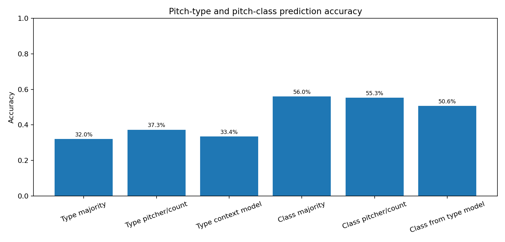
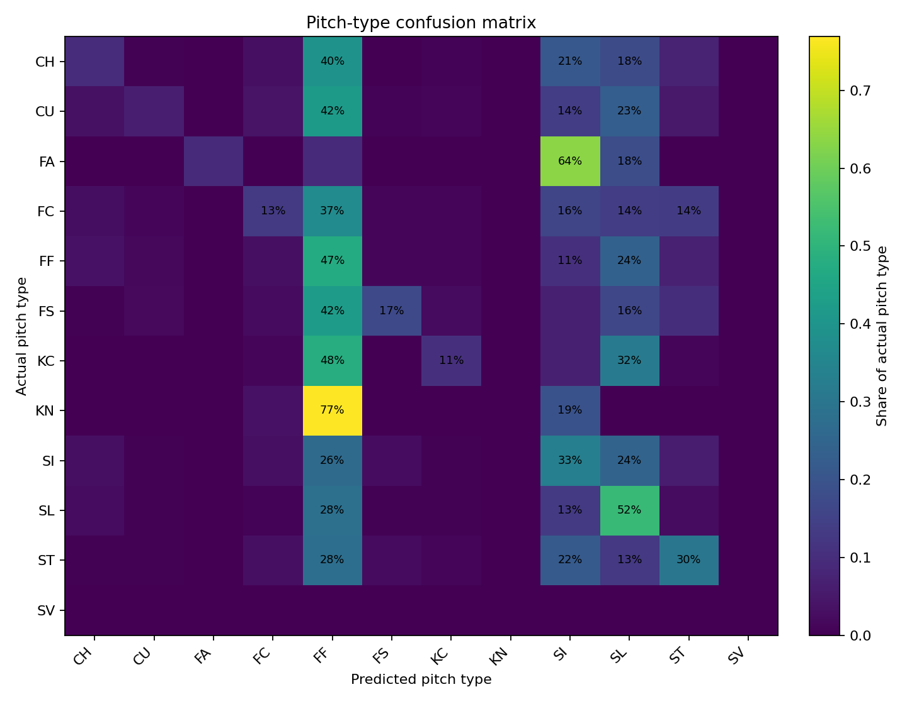
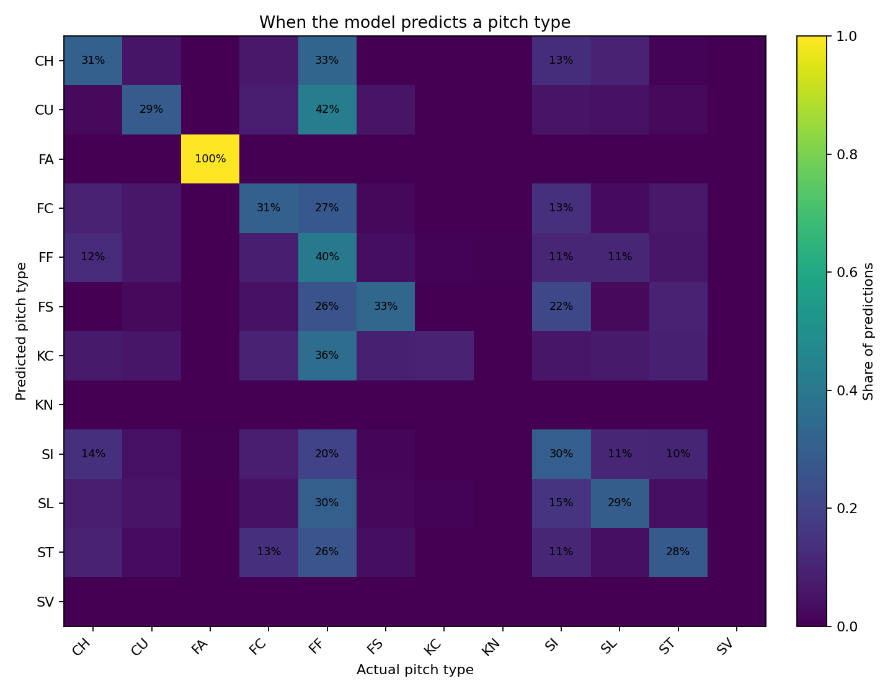
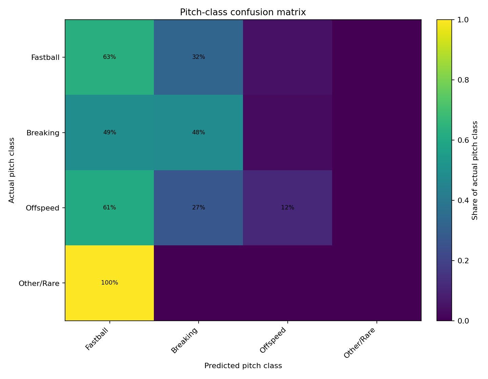
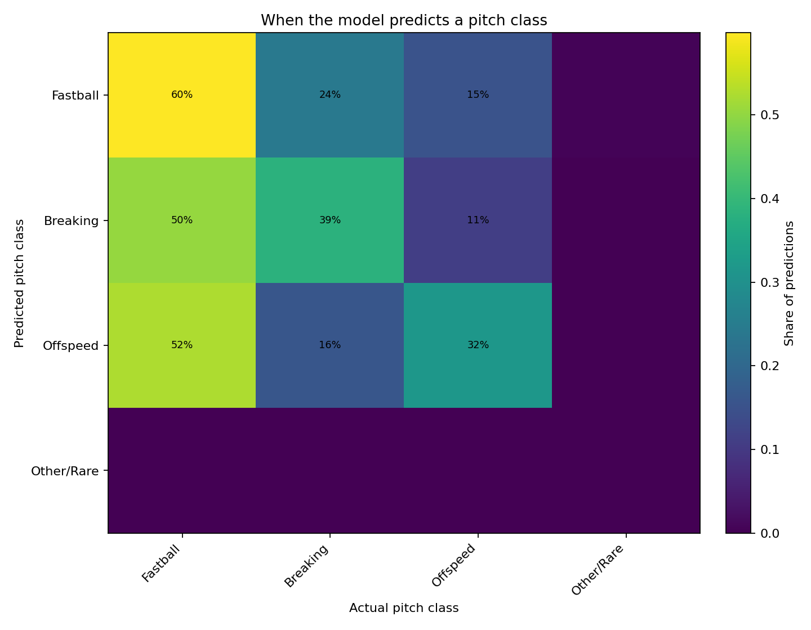
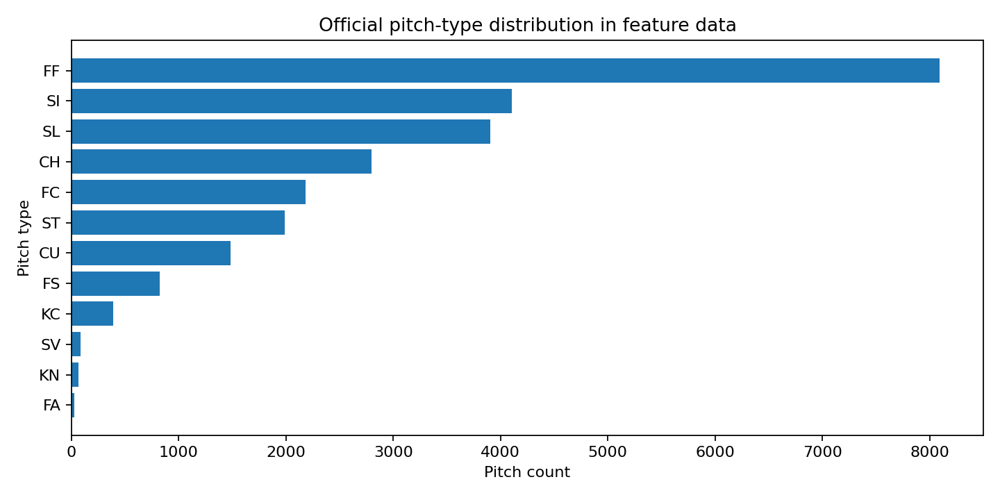
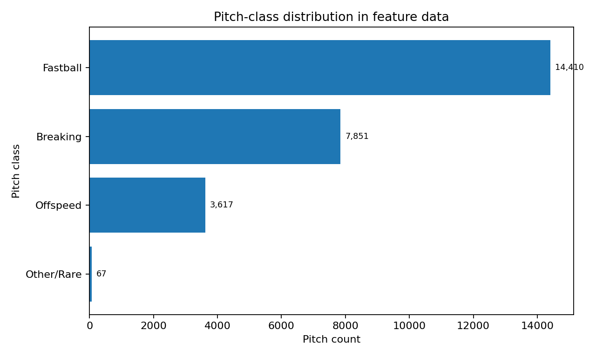
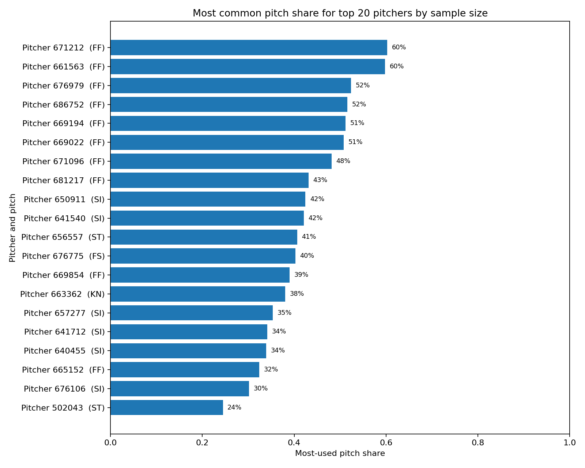

This report summarizes the context-only baseline. It does not use video yet.
The standard confusion matrices are read row by row as Actual → Predicted. The “When the Model Predicts…” matrices are read row by row as Predicted → Actual, which answers questions like: when the model predicts Fastball, what actually happened?
| rows_total | 25945 |
|---|---|
| rows_train | 17393 |
| rows_test | 8552 |
| split_date | 2024-04-05 |
| overall_majority_baseline_accuracy | 32.0% |
| pitcher_count_baseline_accuracy | 37.3% |
| context_model_accuracy | 33.4% |
| overall_majority_baseline_pitch_class_accuracy | 56.0% |
| pitcher_count_baseline_pitch_class_accuracy | 55.3% |
| context_model_pitch_class_accuracy | 50.6% |








| Code | Official pitch name | Pitch class |
|---|---|---|
| AB | Automatic ball | Other/Rare |
| AS | Automatic strike | Other/Rare |
| CH | Changeup | Offspeed |
| CU | Curveball | Breaking |
| EP | Eephus | Other/Rare |
| FA | Fastball | Fastball |
| FC | Cutter | Fastball |
| FF | Four-seam fastball | Fastball |
| FO | Forkball | Offspeed |
| FS | Splitter | Offspeed |
| FT | Two-seam fastball | Fastball |
| GY | Gyroball | Other/Rare |
| IN | Intentional ball | Other/Rare |
| KC | Knuckle-curve | Breaking |
| KN | Knuckleball | Other/Rare |
| NP | No pitch | Other/Rare |
| PO | Pitchout | Other/Rare |
| SC | Screwball | Other/Rare |
| SI | Sinker | Fastball |
| SL | Slider | Breaking |
| ST | Sweeper | Breaking |
| SV | Slurve | Breaking |
| UN | Unknown | Other/Rare |
| Item | File |
|---|---|
| accuracy_chart | accuracy_comparison.png |
| pitch_type_confusion_matrix_chart | confusion_matrix_pitch_type.png |
| pitch_type_when_predicted_chart | confusion_matrix_pitch_type_when_predicted.png |
| pitch_class_confusion_matrix_chart | confusion_matrix_pitch_class.png |
| pitch_class_when_predicted_chart | confusion_matrix_pitch_class_when_predicted.png |
| pitch_type_distribution_chart | pitch_type_distribution.png |
| pitch_class_distribution_chart | pitch_class_distribution.png |
| pitch_mix_chart | pitch_mix_top_pitchers.png |
| pitch_type_key_csv | pitch_type_key.csv |
# Pitcher AI baseline summary Rows total: 25,945 Rows train: 17,393 Rows test: 8,552 Split date: 2024-04-05 ## Pitch-type accuracy Overall majority baseline: 0.320 Pitcher/count baseline: 0.373 Context model: 0.334 ## Pitch-class accuracy Overall majority baseline: 0.560 Pitcher/count baseline: 0.553 Context model mapped to class: 0.506 ## Pitch classes Fastball: FF, SI, FC, FT, FA Breaking: SL, ST, CU, KC, SV Offspeed: CH, FS, FO Other/Rare: KN, EP, SC, GY plus administrative/non-pitch feed codes if present ## Interpretation The context model uses only pre-pitch information. It intentionally excludes current-pitch release speed, spin, movement, plate location, and batted-ball fields. The pitch-class confusion matrix maps predicted pitch types into broader pitch families, so FF predicted as SI is wrong at the official pitch-type level but still correct at the pitch-class level. The next major experiment is to add pre-release video or pose features and test whether they improve over this context-only baseline.